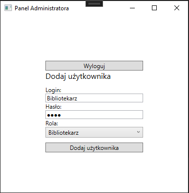
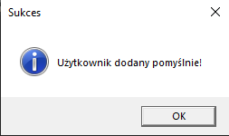
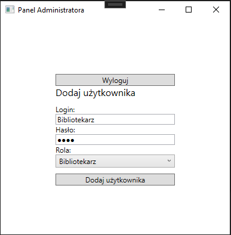
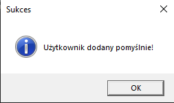
 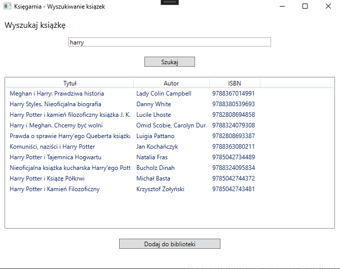
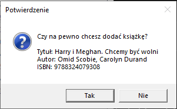
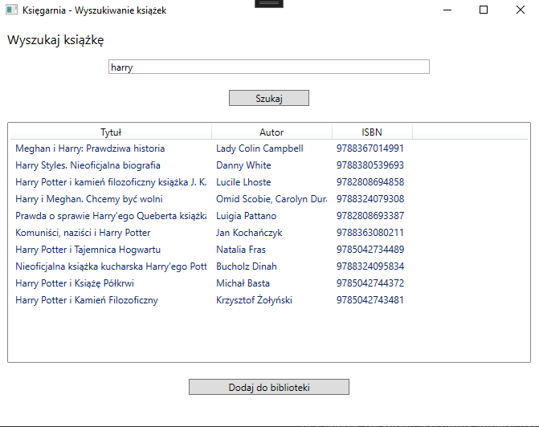
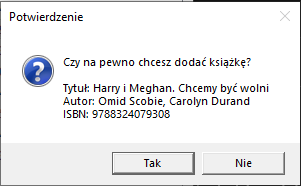
 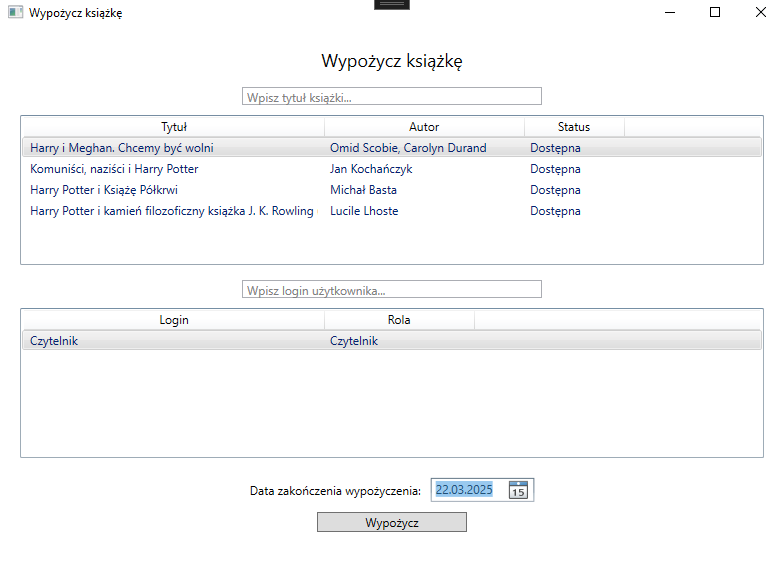
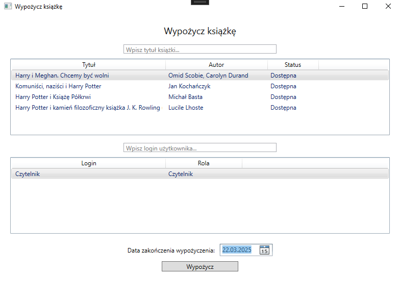
 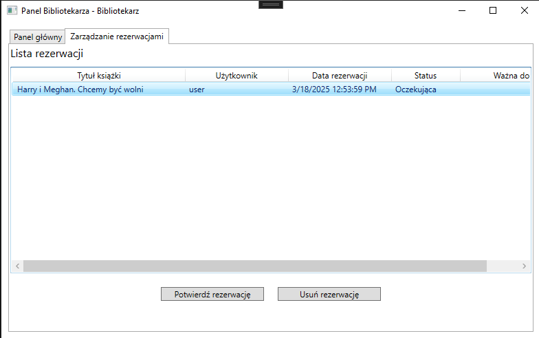
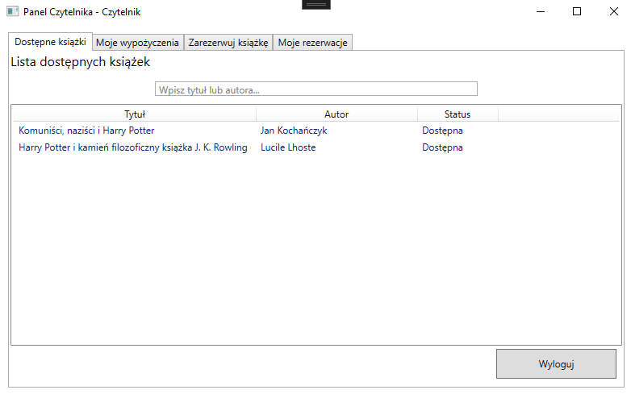
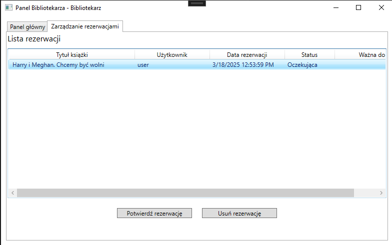
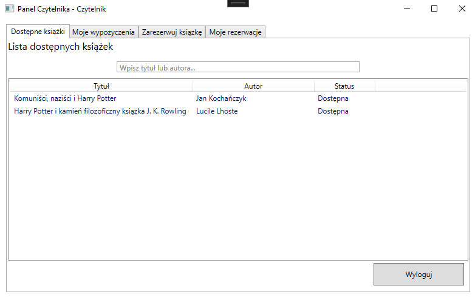

 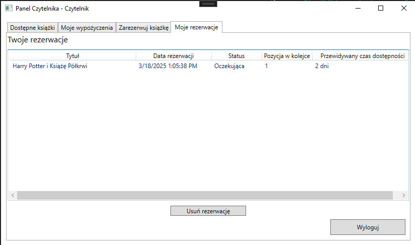
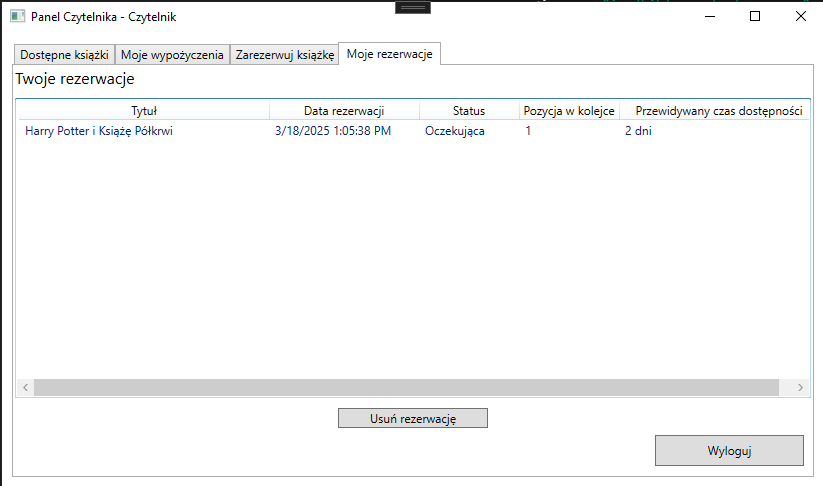
Nowoczesny system zarządzania biblioteką, który łączy intuicyjną obsługę z zaawansowanymi funkcjami wyszukiwania i dodawania książek. Idealne rozwiązanie dla bibliotek każdej wielkości.
LibraryWPF to aplikacja desktopowa stworzona w technologii WPF, służąca do zarządzania biblioteką. System został zaprojektowany z myślą o trzech głównych rolach użytkowników: Administratorze, Bibliotekarzu i Czytelniku. Każdy z nich posiada dedykowane funkcjonalności, które wspierają zarządzanie zasobami bibliotecznymi oraz procesem wypożyczeń i rezerwacji.
Administrator pełni kluczową rolę w zarządzaniu użytkownikami, umożliwiając tworzenie kont Bibliotekarzy i Czytelników, przy czym każda operacja jest odpowiednio potwierdzana komunikatem o sukcesie lub błędzie. Dodatkowo Administrator może monitorować rezerwacje i wypożyczenia oraz generować raporty dotyczące funkcjonowania biblioteki.
Bibliotekarz ma dostęp do szeregu narzędzi usprawniających pracę w bibliotece. Dzięki integracji z Google Books API może on szybko dodawać nowe książki do bazy danych, jednocześnie zatwierdzając ich szczegóły. Bibliotekarz zarządza również książkami już obecnymi w systemie, realizuje wypożyczenia oraz przyjmuje zwroty lub oznacza książki jako zgubione. Panel bibliotekarza zawiera także funkcję zarządzania rezerwacjami, umożliwiając akceptowanie lub anulowanie zgłoszeń.
Czytelnik może przeglądać dostępne książki, sprawdzać stan swoich wypożyczeń oraz zarządzać rezerwacjami. System powiadamia go o zbliżającym się terminie zwrotu książki oraz informuje, gdy zarezerwowana pozycja jest gotowa do wypożyczenia. W przypadku rezygnacji z rezerwacji, użytkownik może ją w każdej chwili anulować.
Aplikacja korzysta z lokalnej bazy danych SQL Server LocalDB oraz integracji z zewnętrznym źródłem danych — Google Books API. Wzorzec projektowy MVVM zapewnia przejrzysty podział logiki biznesowej, danych oraz interfejsu użytkownika, co czyni projekt elastycznym i łatwym w rozbudowie.
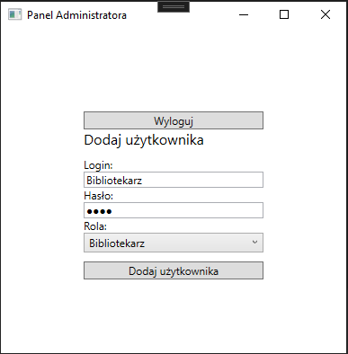
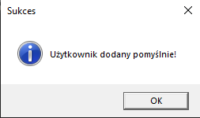
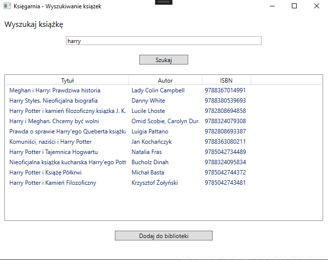
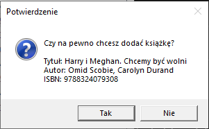
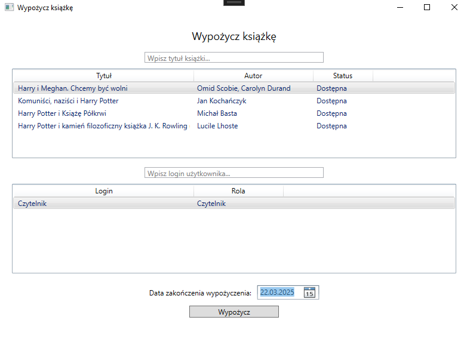
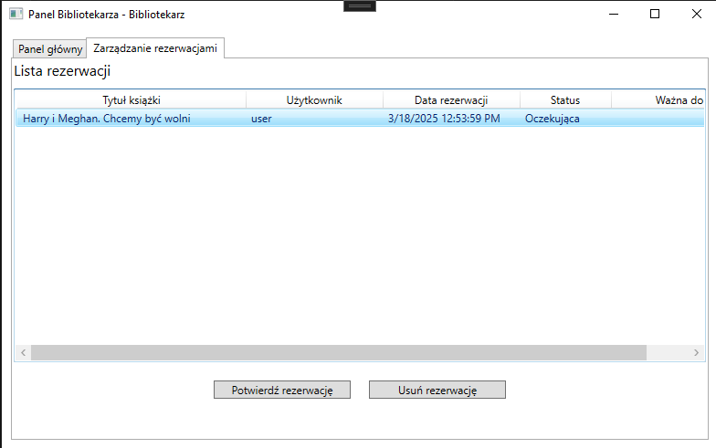
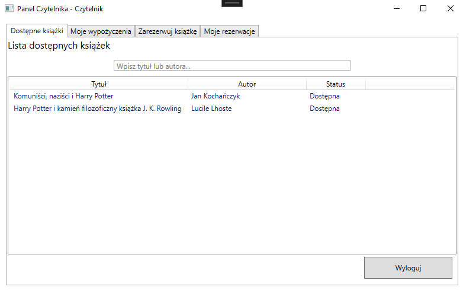
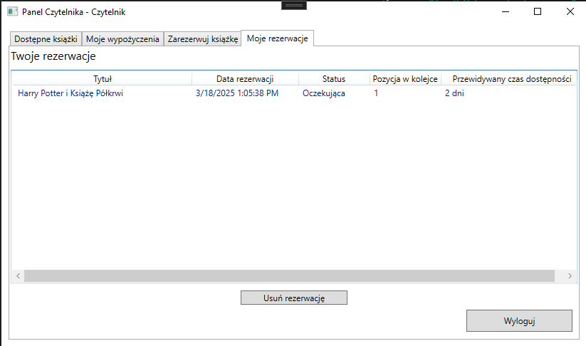